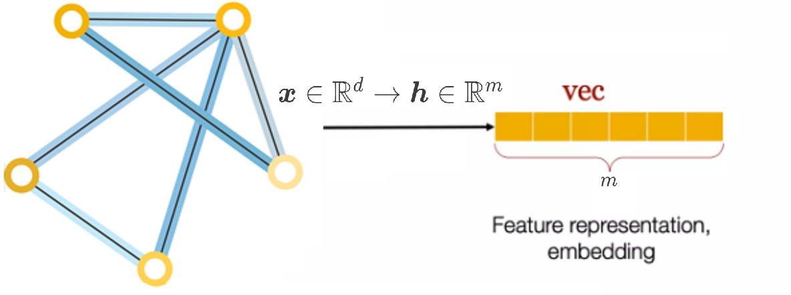
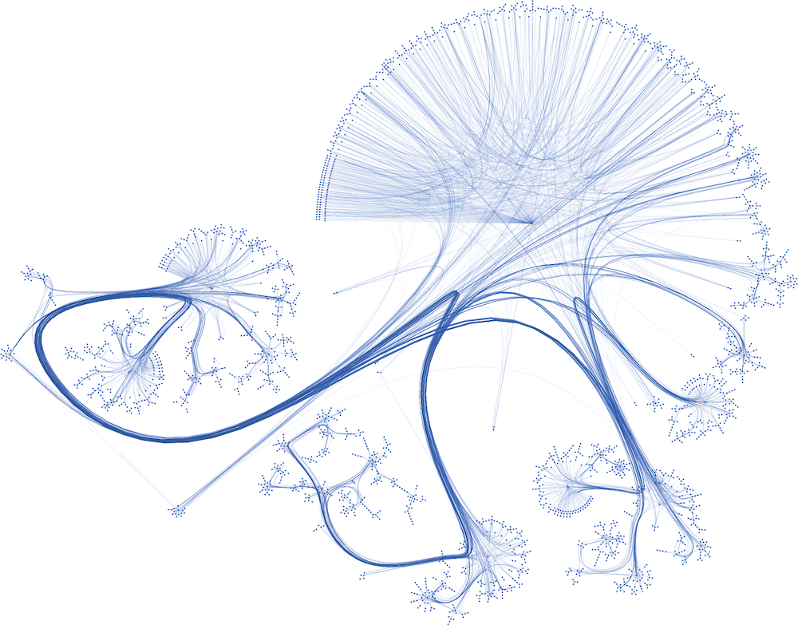

Including Node Features with MLP & GNNs#
So far, we’ve focused on graph topology, but graph datasets often include additional features for nodes and edges, such as scores, colors, and words. Incorporating these features is crucial for creating effective embeddings. In this chapter, we’ll introduce two new graph datasets: Cora and Facebook Page-Page that their nodes’ features are vectors.

We’ll explore how traditional Neural Networks perform on node features alone and then integrate topological information to develop our first Graph Neural Network (GNN) architecture. By comparing the two approaches, we’ll highlight the benefits of combining node features and edges.
By the end of this chapter, you’ll learn to implement MLP and GNNs in PyTorch, embedding topological features into node representations to enhance model performance. Topics covered include:
Introducing graph datasets
Classifying nodes with vanilla neural networks (MLP)
Classifying nodes with vanilla graph neural networks (GNNs)
Introducing graph datasets#
The graph datasets we’re going to use in this chapter are richer than Zachary’s Karate Club: they have more nodes, more edges, and include node features. In this section, we will introduce them to give us a good understanding of these graphs and how to process them with PyTorch Geometric. Here are the two datasets we will use:
The Cora dataset
The Facebook Page-Page dataset
Cora dataset#
Let’s start with the smaller one: the popular Cora dataset from Planetoid. The Cora dataset is the most popular dataset for node classification in the scientific literature. It represents a network of 2,708 publications, where each connection is a reference. Each publication is described as a binary vector of 1,433 unique words, where 0 and 1 indicate the absence or presence of the corresponding word, respectively. This representation is also called a binary bag of words in natural language processing. Our goal is to classify each node into one of seven categories.
The following figure is a plot of the Cora dataset made with yEd Live. Nodes are corresponding to papers. Some papers are so interconnected that they form clusters. These clusters should be easier to classify than poorly connected nodes.

Here, we are given the ground-truth labels of only a small subset of nodes, and want to infer the labels for all the remaining nodes (transductive learning).
Show code cell content
import torch
!pip install -q torch-geometric==2.2.0 torch-scatter~=2.1.0 torch-sparse~=0.6.16 -f https://data.pyg.org/whl/torch-{torch.__version__}.html
torch.manual_seed(0)
torch.cuda.manual_seed(0)
torch.cuda.manual_seed_all(0)
torch.backends.cudnn.deterministic = True
torch.backends.cudnn.benchmark = False
from torch_geometric.datasets import Planetoid
# Import dataset from PyTorch Geometric
dataset = Planetoid(root="../../data", name="Cora")
data = dataset[0]
# Print information about the dataset
print(f'Dataset: {dataset}')
print('---------------')
print(f'Number of graphs: {len(dataset)}')
print(f'Number of nodes: {data.num_nodes}')
print(f'Number of edges: {data.num_edges}')
print(f'Number of features: {dataset.num_features}')
print(f'Number of classes: {dataset.num_classes}')
# Print information about the graph
print(f'\nGraph:')
print('------')
print(f'Average node degree: {data.num_edges / data.num_nodes:.2f}')
print(f'Number of training nodes: {data.train_mask.sum()}')
print(f'Training node label rate: {int(data.train_mask.sum()) / data.num_nodes:.2f}')
print(f'Has isolated nodes: {data.has_isolated_nodes()}')
print(f'Edges are directed: {data.is_directed()}')
print(f'Graph has isolated nodes: {data.has_isolated_nodes()}')
print(f'Has self-loops: {data.has_self_loops()}')
print(f'Is undirected: {data.is_undirected()}')
Dataset: Cora()
---------------
Number of graphs: 1
Number of nodes: 2708
Number of edges: 10556
Number of features: 1433
Number of classes: 7
Graph:
------
Average node degree: 3.90
Number of training nodes: 140
Training node label rate: 0.05
Has isolated nodes: False
Edges are directed: False
Graph has isolated nodes: False
Has self-loops: False
Is undirected: True
The different subjects (classes) are:
‘Case_Based’, ‘Genetic_Algorithms’, ‘Neural_Networks’, ‘Probabilistic_Methods’, ‘Reinforcement_Learning’, ‘Rule_Learning’, ‘Theory’
A typical ML challenges with this dataset in mind:
label prediction: predict the subject of a paper (node) on the basis of the surrounding node data and the structure of the graph
edge prediction: given node data, can one predict the papers that should be cited?
import pandas as pd
df_x = pd.DataFrame(data.x.numpy())
df_x['label'] = pd.DataFrame(data.y)
df_x
| 0 | 1 | 2 | 3 | 4 | 5 | 6 | 7 | 8 | 9 | ... | 1424 | 1425 | 1426 | 1427 | 1428 | 1429 | 1430 | 1431 | 1432 | label | |
|---|---|---|---|---|---|---|---|---|---|---|---|---|---|---|---|---|---|---|---|---|---|
| 0 | 0.0 | 0.0 | 0.0 | 0.0 | 0.0 | 0.0 | 0.0 | 0.0 | 0.0 | 0.0 | ... | 0.0 | 0.0 | 0.0 | 0.0 | 0.0 | 0.0 | 0.0 | 0.0 | 0.0 | 3 |
| 1 | 0.0 | 0.0 | 0.0 | 0.0 | 0.0 | 0.0 | 0.0 | 0.0 | 0.0 | 0.0 | ... | 0.0 | 0.0 | 0.0 | 0.0 | 0.0 | 0.0 | 0.0 | 0.0 | 0.0 | 4 |
| 2 | 0.0 | 0.0 | 0.0 | 0.0 | 0.0 | 0.0 | 0.0 | 0.0 | 0.0 | 0.0 | ... | 0.0 | 0.0 | 0.0 | 0.0 | 0.0 | 0.0 | 0.0 | 0.0 | 0.0 | 4 |
| 3 | 0.0 | 0.0 | 0.0 | 0.0 | 0.0 | 0.0 | 0.0 | 0.0 | 0.0 | 0.0 | ... | 0.0 | 0.0 | 0.0 | 0.0 | 0.0 | 0.0 | 0.0 | 0.0 | 0.0 | 0 |
| 4 | 0.0 | 0.0 | 0.0 | 1.0 | 0.0 | 0.0 | 0.0 | 0.0 | 0.0 | 0.0 | ... | 0.0 | 0.0 | 0.0 | 0.0 | 0.0 | 0.0 | 0.0 | 0.0 | 0.0 | 3 |
| ... | ... | ... | ... | ... | ... | ... | ... | ... | ... | ... | ... | ... | ... | ... | ... | ... | ... | ... | ... | ... | ... |
| 2703 | 0.0 | 0.0 | 0.0 | 0.0 | 0.0 | 1.0 | 0.0 | 0.0 | 0.0 | 0.0 | ... | 0.0 | 1.0 | 0.0 | 0.0 | 0.0 | 0.0 | 0.0 | 0.0 | 0.0 | 3 |
| 2704 | 0.0 | 0.0 | 1.0 | 0.0 | 0.0 | 0.0 | 0.0 | 0.0 | 0.0 | 0.0 | ... | 0.0 | 0.0 | 0.0 | 0.0 | 0.0 | 0.0 | 0.0 | 0.0 | 0.0 | 3 |
| 2705 | 0.0 | 0.0 | 0.0 | 0.0 | 0.0 | 0.0 | 0.0 | 0.0 | 0.0 | 0.0 | ... | 0.0 | 0.0 | 0.0 | 0.0 | 0.0 | 0.0 | 0.0 | 0.0 | 0.0 | 3 |
| 2706 | 0.0 | 0.0 | 0.0 | 0.0 | 0.0 | 0.0 | 0.0 | 0.0 | 0.0 | 0.0 | ... | 0.0 | 0.0 | 0.0 | 0.0 | 0.0 | 0.0 | 0.0 | 0.0 | 0.0 | 3 |
| 2707 | 0.0 | 0.0 | 0.0 | 0.0 | 0.0 | 0.0 | 0.0 | 0.0 | 0.0 | 0.0 | ... | 0.0 | 0.0 | 0.0 | 0.0 | 0.0 | 0.0 | 0.0 | 0.0 | 0.0 | 3 |
2708 rows × 1434 columns
Classifying nodes with vanilla neural networks (MLPs)#
Compared to Zachary’s Karate Club, these two datasets include a new type of information: node features. They provide additional information about the nodes in a graph, such as a user’s age, gender, or interests in a social network. In a vanilla neural network (also called multilayer perceptron), these embeddings are directly used in the model to perform downstream tasks such as node classification. In this section, we will consider node features as a regular tabular dataset. We will train a simple neural network on this dataset to classify our nodes. Note that this architecture does not take into account the topology of the network. We will try to fix this issue in the next section and compare our results
If you’re familiar with machine learning, you probably recognize a typical dataset with data and labels. We can develop a simple Multilayer Perceptron (MLP) and train it on data.x with the labels provided by data.y. Let’s create our own MLP class with four methods:
init() to initialize an instance
forward() to perform the forward pass
fit() to train the model
test() to evaluate it
TensorFlow and PyTorch are two famouse deep learning libraries. In Fall 2023 the deep learning course of FUM-CS was based on TensorFlow, and in Fall 2024, PyTorch is used in the mentioned course. The code here are based on PyTorch.
import torch
torch.manual_seed(0)
from torch.nn import Linear
import torch.nn.functional as F
def accuracy(y_pred, y_true):
"""Calculate accuracy."""
return torch.sum(y_pred == y_true) / len(y_true)
class MLP(torch.nn.Module):
"""Multilayer Perceptron"""
def __init__(self, dim_in, dim_h, dim_out):
super().__init__()
self.linear1 = Linear(dim_in, dim_h)
self.linear2 = Linear(dim_h, dim_out)
def forward(self, x):
x = self.linear1(x)
x = torch.relu(x)
x = self.linear2(x)
return F.log_softmax(x, dim=1)
def fit(self, data, epochs):
criterion = torch.nn.CrossEntropyLoss()
optimizer = torch.optim.Adam(self.parameters(),
lr=0.01,
weight_decay=5e-4)
self.train()
for epoch in range(epochs+1):
optimizer.zero_grad()
out = self(data.x)
loss = criterion(out[data.train_mask], data.y[data.train_mask])
acc = accuracy(out[data.train_mask].argmax(dim=1),
data.y[data.train_mask])
loss.backward()
optimizer.step()
if(epoch % 20 == 0):
val_loss = criterion(out[data.val_mask], data.y[data.val_mask])
val_acc = accuracy(out[data.val_mask].argmax(dim=1),
data.y[data.val_mask])
print(f'Epoch {epoch:>3} | Train Loss: {loss:.3f} | Train Acc:'
f' {acc*100:>5.2f}% | Val Loss: {val_loss:.2f} | '
f'Val Acc: {val_acc*100:.2f}%')
@torch.no_grad()
def test(self, data):
self.eval()
out = self(data.x)
acc = accuracy(out.argmax(dim=1)[data.test_mask], data.y[data.test_mask])
return acc
# Create MLP model
mlp = MLP(dataset.num_features, 16, dataset.num_classes)
print(mlp)
# Train
mlp.fit(data, epochs=100)
# Test
acc = mlp.test(data)
print(f'\nMLP test accuracy: {acc*100:.2f}%')
MLP(
(linear1): Linear(in_features=1433, out_features=16, bias=True)
(linear2): Linear(in_features=16, out_features=7, bias=True)
)
Epoch 0 | Train Loss: 1.959 | Train Acc: 14.29% | Val Loss: 2.00 | Val Acc: 12.40%
Epoch 20 | Train Loss: 0.110 | Train Acc: 100.00% | Val Loss: 1.46 | Val Acc: 49.40%
Epoch 40 | Train Loss: 0.014 | Train Acc: 100.00% | Val Loss: 1.44 | Val Acc: 51.00%
Epoch 60 | Train Loss: 0.008 | Train Acc: 100.00% | Val Loss: 1.40 | Val Acc: 53.80%
Epoch 80 | Train Loss: 0.008 | Train Acc: 100.00% | Val Loss: 1.37 | Val Acc: 55.40%
Epoch 100 | Train Loss: 0.009 | Train Acc: 100.00% | Val Loss: 1.34 | Val Acc: 54.60%
MLP test accuracy: 53.40%
Classifying nodes with Vanilla Graph Neural Network#
A Graph Neural Network (GNN) is a type of neural network designed to operate on graph-structured data. It learns to represent nodes and edges in a graph through message passing and aggregation techniques. Let’s break down a simple GNN architecture, focusing on some core mathematical components, particularly the formulation involving weights.
Basics of Graph Representation#
In a graph \( G = (V, E) \):
\( V \) is the set of nodes (vertices), \(|V|=N\).
\( E \) is the set of edges connecting these nodes.
Node Features#
Each node \( i \in V \) has a feature vector \( \mathbf{x}_i \) of dimension \( d \). If there are \( N \) nodes in the graph, we can represent the features of all nodes as a feature matrix \( \mathbf{X} \):
Weight Matrix#
In GNNs, the weights are shared across all nodes, which is a key aspect that allows the model to generalize to different sizes and structures of graphs. The weight matrix \( \mathbf{W} \in \mathbb{R}^{d \times m} \) transforms the feature dimension from \( d \) to \( m \) (the output dimension).
Node Representation Calculation#
For a single node \( i \), the new representation after applying the weight matrix can be given as:
Where:
\( \mathbf{h}_i \in \mathbb{R}^{m} \) is the new representation of node \( i \).
\( \mathbf{x}_i \in \mathbb{R}^{d} \) is the feature vector of node \( i \).
\( \mathbf{W} \in \mathbb{R}^{d \times m} \) is the weight matrix.
\( \mathbf{X} \in \mathbb{R}^{N \times d}\) is the features of all nodes. In matrix form for all nodes:
Where:
\( \mathbf{H} \in \mathbb{R}^{N \times m} \) is the matrix of new node representations.
Weight Sharing#
The weight sharing comes from the fact that each \( \mathbf{x}_i \) is transformed by the same weight matrix \( \mathbf{W} \). This ensures that irrespective of the node being processed, the same transformation is applied, allowing for efficient training on various graph sizes.
GNN Layer with Adjacency Matrix#
A simple vanilla GNN layer can use the adjacency matrix \( \mathbf{A} \in \mathbb{R}^{N \times N}\) of the graph. The operation of a GNN Layer are as follows:
Aggregation: For each node, aggregate features from its neighbors. This can be done using matrix multiplication with the adjacency matrix:
Update: Apply the weight transformation to the aggregated node features:
Where:
\( \mathbf{H}^{(l)} \) represents the node features at layer \( l \).
\( \sigma \) is an activation function (e.g., ReLU).
\( \mathbf{W}^{(l)} \) is the weight matrix for layer \( l \).
\( \mathbf{H}^{(0)} = X\).
This operation allows each node to learn from its neighbors and update its representation iteratively across multiple layers.
For \(l=1\), we have: $\( \mathbf{H}^{(1)} = \sigma(\mathbf{A} \mathbf{X} \mathbf{W}^{(0)}) \)$
Where: \(\mathbf{A} \in \mathbb{R}^{N \times N}, \mathbf{X} \in \mathbb{R}^{N \times d}, \mathbf{W}^{(0)} \in \mathbb{R}^{d \times m} \rightarrow \mathbf{H}^{(1)}\in \mathbb{R}^{N \times m}\)
Show code cell content
import torch
torch.manual_seed(0)
from torch.nn import Linear
import torch.nn.functional as F
class VanillaGNNLayer(torch.nn.Module):
def __init__(self, dim_in, dim_out):
super().__init__()
self.linear = Linear(dim_in, dim_out, bias=False)
def forward(self, x, adjacency):
hw = self.linear(x)
ahw = torch.sparse.mm(adjacency, hw)
return ahw
from torch_geometric.utils import to_dense_adj
adjacency = to_dense_adj(data.edge_index)[0]
adjacency += torch.eye(len(adjacency))
data.x.shape, adjacency.shape
(torch.Size([2708, 1433]), torch.Size([2708, 2708]))
class VanillaGNN(torch.nn.Module):
"""Vanilla Graph Neural Network"""
def __init__(self, dim_in, dim_h, dim_out):
super().__init__()
self.gnn1 = VanillaGNNLayer(dim_in, dim_h)
self.gnn2 = VanillaGNNLayer(dim_h, dim_out)
def forward(self, x, adjacency):
ahw = self.gnn1(x, adjacency)
h = torch.relu(ahw)
ahw = self.gnn2(h, adjacency)
return F.log_softmax(ahw, dim=1)
def fit(self, data, epochs):
criterion = torch.nn.CrossEntropyLoss()
optimizer = torch.optim.Adam(self.parameters(),
lr=0.01,
weight_decay=5e-4)
self.train()
for epoch in range(epochs+1):
optimizer.zero_grad()
out = self(data.x, adjacency)
loss = criterion(out[data.train_mask], data.y[data.train_mask])
acc = accuracy(out[data.train_mask].argmax(dim=1),
data.y[data.train_mask])
loss.backward()
optimizer.step()
if(epoch % 20 == 0):
val_loss = criterion(out[data.val_mask], data.y[data.val_mask])
val_acc = accuracy(out[data.val_mask].argmax(dim=1),
data.y[data.val_mask])
print(f'Epoch {epoch:>3} | Train Loss: {loss:.3f} | Train Acc:'
f' {acc*100:>5.2f}% | Val Loss: {val_loss:.2f} | '
f'Val Acc: {val_acc*100:.2f}%')
@torch.no_grad()
def test(self, data):
self.eval()
out = self(data.x, adjacency)
acc = accuracy(out.argmax(dim=1)[data.test_mask], data.y[data.test_mask])
return acc
# Create the Vanilla GNN model
gnn = VanillaGNN(dataset.num_features, 16, dataset.num_classes)
print(gnn)
# Train
gnn.fit(data, epochs=100)
# Test
acc = gnn.test(data)
print(f'\nGNN test accuracy: {acc*100:.2f}%')
VanillaGNN(
(gnn1): VanillaGNNLayer(
(linear): Linear(in_features=1433, out_features=16, bias=False)
)
(gnn2): VanillaGNNLayer(
(linear): Linear(in_features=16, out_features=7, bias=False)
)
)
Epoch 0 | Train Loss: 2.039 | Train Acc: 16.43% | Val Loss: 2.10 | Val Acc: 8.80%
Epoch 20 | Train Loss: 0.025 | Train Acc: 100.00% | Val Loss: 2.20 | Val Acc: 74.40%
Epoch 40 | Train Loss: 0.003 | Train Acc: 100.00% | Val Loss: 2.95 | Val Acc: 73.20%
Epoch 60 | Train Loss: 0.001 | Train Acc: 100.00% | Val Loss: 3.04 | Val Acc: 73.80%
Epoch 80 | Train Loss: 0.001 | Train Acc: 100.00% | Val Loss: 2.96 | Val Acc: 74.20%
Epoch 100 | Train Loss: 0.001 | Train Acc: 100.00% | Val Loss: 2.89 | Val Acc: 74.40%
GNN test accuracy: 75.10%
Facebook Page-Page dataset#
## Facebook dataset
from torch_geometric.datasets import FacebookPagePage
# Import dataset from PyTorch Geometric
dataset = FacebookPagePage(root="../../data/Facebook")
data = dataset[0]
# Print information about the dataset
print(f'Dataset: {dataset}')
print('-----------------------')
print(f'Number of graphs: {len(dataset)}')
print(f'Number of nodes: {data.x.shape[0]}')
print(f'Number of features: {dataset.num_features}')
print(f'Number of classes: {dataset.num_classes}')
# Print information about the graph
print(f'\nGraph:')
print('------')
print(f'Edges are directed: {data.is_directed()}')
print(f'Graph has isolated nodes: {data.has_isolated_nodes()}')
print(f'Graph has loops: {data.has_self_loops()}')
# Create masks
data.train_mask = range(18000)
data.val_mask = range(18001, 20000)
data.test_mask = range(20001, 22470)
Dataset: FacebookPagePage()
-----------------------
Number of graphs: 1
Number of nodes: 22470
Number of features: 128
Number of classes: 4
Graph:
------
Edges are directed: False
Graph has isolated nodes: False
Graph has loops: True
# Dataset
data.train_mask = range(18000)
data.val_mask = range(18001, 20000)
data.test_mask = range(20001, 22470)
# Adjacency matrix
adjacency = to_dense_adj(data.edge_index)[0]
adjacency += torch.eye(len(adjacency))
adjacency
# MLP
mlp = MLP(dataset.num_features, 16, dataset.num_classes)
print(mlp)
mlp.fit(data, epochs=100)
acc = mlp.test(data)
print(f'\nMLP test accuracy: {acc*100:.2f}%\n')
# GCN
gnn = VanillaGNN(dataset.num_features, 16, dataset.num_classes)
print(gnn)
gnn.fit(data, epochs=100)
acc = gnn.test(data)
print(f'\nGNN test accuracy: {acc*100:.2f}%')
MLP(
(linear1): Linear(in_features=128, out_features=16, bias=True)
(linear2): Linear(in_features=16, out_features=4, bias=True)
)
Epoch 0 | Train Loss: 1.435 | Train Acc: 19.40% | Val Loss: 1.42 | Val Acc: 19.46%
Epoch 20 | Train Loss: 0.677 | Train Acc: 73.54% | Val Loss: 0.69 | Val Acc: 73.04%
Epoch 40 | Train Loss: 0.581 | Train Acc: 76.63% | Val Loss: 0.63 | Val Acc: 73.74%
Epoch 60 | Train Loss: 0.551 | Train Acc: 78.13% | Val Loss: 0.61 | Val Acc: 75.14%
Epoch 80 | Train Loss: 0.534 | Train Acc: 78.72% | Val Loss: 0.61 | Val Acc: 75.19%
Epoch 100 | Train Loss: 0.522 | Train Acc: 79.26% | Val Loss: 0.61 | Val Acc: 75.59%
MLP test accuracy: 75.42%
VanillaGNN(
(gnn1): VanillaGNNLayer(
(linear): Linear(in_features=128, out_features=16, bias=False)
)
(gnn2): VanillaGNNLayer(
(linear): Linear(in_features=16, out_features=4, bias=False)
)
)
Epoch 0 | Train Loss: 46.270 | Train Acc: 25.39% | Val Loss: 46.26 | Val Acc: 25.41%
Epoch 20 | Train Loss: 3.429 | Train Acc: 82.52% | Val Loss: 2.84 | Val Acc: 82.69%
Epoch 40 | Train Loss: 1.318 | Train Acc: 84.51% | Val Loss: 1.28 | Val Acc: 85.04%
Epoch 60 | Train Loss: 0.797 | Train Acc: 85.23% | Val Loss: 0.85 | Val Acc: 85.04%
Epoch 80 | Train Loss: 0.690 | Train Acc: 85.83% | Val Loss: 0.72 | Val Acc: 85.39%
Epoch 100 | Train Loss: 0.852 | Train Acc: 86.12% | Val Loss: 0.70 | Val Acc: 86.89%
GNN test accuracy: 85.22%
Summary#
Each node has a feature vector \( \mathbf{x}_i \) of dimension \( d \).
The combined feature matrix for all nodes is \( \mathbf{X} \in \mathbb{R}^{N \times d} \).
A weight matrix \( \mathbf{W} \in \mathbb{R}^{d \times m} \) transforms the features.
The adjacency matrix \( \mathbf{A} \) is used to aggregate neighbors’ information.
The new node representations can be calculated iteratively in a GNN layer as:
This framework builds the foundation for more complex operations in GNNs, including additional layers and techniques for handling diverse graph structures.